Liebe Wanderfreunde, liebe Besucher,herzlich willkommen bei der Abteilung Wandern des 1. SC 1911 Heiligenstadt e.V.
Seit unserer Gründung im Juli 2021 haben wir uns zu einer lebendigen Gemeinschaft von Wanderbegeisterten entwickelt. Dank unseres strukturierten Wanderplans und unserer gut organisierten Wanderrouten konnten wir immer mehr Menschen für das Wandern begeistern und in unserem Verein begrüßen.
Unsere Wanderungen bieten für jeden Geschmack und jedes Fitnesslevel etwas. Ob Sie die Natur bei einem gemütlichen Spaziergang genießen möchten oder eine anspruchsvolle Bergtour bevorzugen, wir haben das passende Angebot für Sie.
Hier sind einige unserer beliebtesten Wanderungen:
Der „Ibergklassiker“ führt durch malerische Landschaften und bietet atemberaubende Ausblicke auf die umliegenden Landschaft. Diese Wanderung ist auch für weniger geübte Wanderer geeignet.
Und wenn Sie mit Ihrer Familie oder Freunden eine entspannende Wanderung unternehmen möchten, wir bieten über das Jahr verteilt an jeden letzten Samstag im Monat eine geführte Wanderung an. Diese Wanderung führt durch dichte Wälder und ist auch für Kinder bestens geeignet.
Wir möchten Sie ermutigen, sich unserer Wandergemeinschaft anzuschließen und Teil unserer wachsenden Gemeinschaft zu werden. Wandern ist nicht nur eine großartige Möglichkeit, körperlich fit zu bleiben, sondern bietet auch die Chance, die Natur zu erleben und neue Freundschaften zu schließen. Nutz unseren Wanderplan und erfahrt mehr über unsere Aktivitäten und Wanderungen.
Wir freuen uns darauf, Sie bei einer unserer nächsten Touren begrüßen zu dürfen!
Hierzu haben wir unseren aktuellen Wanderplan für das Jahr 2025 erstellt.
zum Download des Wanderplan 2025.
Unser Wimpel ist weiter auf Reisen! 💙🤍
Vom Auersberg führte der Weg unserer Wimpelgruppe durch die traditionsreiche Bergbauregion nach Johanngeorgenstadt – begleitet von einem Kamerateam des MDR Sachsen. Einen Tag später ging es durch das idyllische Steinbachtal weiter Richtung Rittersgrün.
Das große Ziel rückt näher: Oberwiesenthal und der 123. Deutsche Wandertag! 🥾
👉 https://t1p.de/23nat
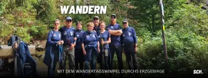
+++ Mit dem Wandertagswimpel durchs Erzgebirge +++
Unsere Wimpelgruppe auf dem Weg nach Oberwiesenthal
Der Weg geht weiter – und mit jedem Kilometer rückt das große Ziel ein Stück näher. Unsere Wimpelgruppe ist weiterhin mit dem Wandertagswimpel unterwegs, der in diesem Jahr eine ganz besondere Reise erlebt. Nach dem 122. Deutschen Wandertag im Eichsfeld führt sein Weg durch das Erzgebirge zum nächsten Gastgeber. Am 24. September soll der Wimpel beim 123. Deutschen Wandertag feierlich in Oberwiesenthal eintreffen.
Vom Auersberg durch eine Region mit Geschichte
Am Mittwoch, 2. September, führte die Route unserer Wanderfreunde vom Auersberg weiter in Richtung Johanngeorgenstadt. Eine Etappe, die nicht nur landschaftlich einiges zu bieten hatte. Der Weg führte mitten durch eine Region, deren Geschichte seit Jahrhunderten eng mit dem Bergbau verbunden ist. Genau diese Verbindung von Landschaft, Tradition und Bergbau prägt das Erzgebirge bis heute. Die Montanregion Erzgebirge/Krušnohoří gehört zum UNESCO-Welterbe und wird auch beim diesjährigen Deutschen Wandertag eine zentrale Rolle spielen. Zahlreiche Touren beschäftigen sich mit der Natur, der Kultur und der Bergbaugeschichte der Region.
Für unsere Gruppe bedeutete die Etappe einen weiteren besonderen Abschnitt auf der langen Reise mit dem Wandertagswimpel. Ziel des Tages war Johanngeorgenstadt nahe der deutsch-tschechischen Grenze.
MDR begleitet unsere Wanderfreunde
Ganz allein war unsere Wimpelgruppe an diesem Tag allerdings nicht unterwegs. Ein Kamerateam des MDR Sachsen begleitete die Wanderung und hielt Eindrücke von der Etappe fest.
Für unsere Wanderabteilung ist diese mediale Begleitung eine schöne Anerkennung. Schließlich geht es bei der Wimpelwanderung um weit mehr als die Strecke von einem Ort zum nächsten. Unsere Wanderfreunde tragen ein Stück des vergangenen Deutschen Wandertages aus dem Eichsfeld zum neuen Austragungsort – und vertreten dabei zugleich unseren Verein und unsere Heimat weit über die Region hinaus.
Dass der MDR den Weg begleitet, passt auch zum wachsenden Interesse am kommenden Wandertag. Der Deutsche Wanderverband erwartet in Oberwiesenthal bis zu 20.000 Gäste aus Deutschland und vielen europäischen Ländern. Zudem ist für den 26. September eine MDR-Berichterstattung rund um den Deutschen Wandertag angekündigt.
Durch das Steinbachtal nach Rittersgrün
Schon einen Tag später wurden die Wanderschuhe erneut geschnürt. Am Donnerstag, 3. September, führte die nächste Etappe durch das idyllische Steinbachtal in Richtung Rittersgrün.
Nach der vom Bergbau geprägten Route des Vortages zeigte sich das Erzgebirge dabei wieder von einer anderen Seite. Wälder, Täler und die typische Mittelgebirgslandschaft begleiteten unsere Gruppe auf ihrem weiteren Weg. Schritt für Schritt arbeitet sie sich damit durch die Region, in der Ende September Wanderfreunde aus ganz Europa zusammenkommen werden.
Denn 2026 bekommt der Deutsche Wandertag noch einmal eine besondere Dimension: Parallel findet erstmals die internationale EURORANDO im deutsch-tschechischen Erzgebirge statt. Unter dem gemeinsamen Gedanken „bewegt verbunden – Gemeinsam durch das Erzgebirge“ sollen Naturerlebnis, Begegnung und das Miteinander über Ländergrenzen hinweg verbunden werden.
Das große Ziel rückt näher
Noch liegen einige Kilometer vor unserer Wimpelgruppe. Doch das Ziel ist klar: Oberwiesenthal. Dort wird der 123. Deutsche Wandertag vom 24. bis 27. September ausgetragen. Bereits ab dem 20. September beginnt die EURORANDO und macht das Erzgebirge für eine Woche zum Treffpunkt der europäischen Wanderszene.
Für unsere Wanderfreunde wird besonders der Donnerstag, 24. September, ein großer Moment. Um 15 Uhr beginnt die offizielle Eröffnung des 123. Deutschen Wandertages – und ausdrücklich zum Festprogramm gehört der
feierliche Empfang der Wimpelwandergruppe aus Heilbad Heiligenstadt.
Bis dahin wandert der Wimpel weiter. Kilometer für Kilometer, Etappe für Etappe. Unsere Wimpelgruppe trägt dabei nicht nur ein traditionsreiches Symbol durch das Erzgebirge. Sie nimmt auch ein Stück Eichsfeld, ein Stück Vereinsleben und viele Erinnerungen an den Deutschen Wandertag 2024 mit auf die Reise.
Und genau das macht diese Wochen für unsere Wanderabteilung so besonders. Aus einem langen Weg werden viele kleine Geschichten – und am Ende steht in Oberwiesenthal ein Ziel, auf das unsere Wanderfreunde seit dem Aufbruch gemeinsam hinarbeiten.
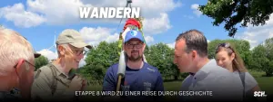
+++ Etappe 8 wird zu einer Reise durch die Geschichte +++
Eine Etappe voller Geschichte, Begegnungen und bewegender Momente
Mit der 8. Etappe unserer Wimpelwanderung auf dem Weg zum 123. Deutschen Wandertag in Oberwiesenthal stand für unsere Wandergruppe ein Abschnitt auf dem Programm, der weit mehr war als eine sechs Kilometer lange Wanderung. Die Strecke führte von Mödlareuth bis zum Dreifreistaatenstein – durch eine Region, in der Geschichte lebendig wird und in der das Miteinander heute wichtiger ist denn je. Nach den eindrucksvollen Erlebnissen beim Thüringer Wandertag in Bad Tabarz wartete bereits der nächste emotionale Höhepunkt auf unsere Wanderfreunde. Genau dafür steht unsere Wimpelwanderung seit ihrem ersten Schritt.
Staffelstabübergabe im geteilten Dorf
Der Tag begann in Mödlareuth – jenem kleinen Ort, der als „Little Berlin“ weltweite Bekanntheit erlangte. Über vier Jahrzehnte verlief hier mitten durch das Dorf die innerdeutsche Grenze. Familien, Nachbarn und Freunde wurden durch Mauer, Zaun und Stacheldraht voneinander getrennt. Heute erinnert das Deutsch-Deutsche Museum eindrucksvoll daran, wie wertvoll Freiheit, Demokratie und ein friedliches Miteinander sind. Dort erfolgte die symbolische Staffelstabübergabe. Unser Vereinspräsident und Präsident des Thüringer Landtags, Dr. Thadäus König, übergab den Wanderwimpel an den sächsischen Landtagsabgeordneten. Mit dabei waren auch Ivona Valhová, Ph.D., Generalkonsulin der Tschechischen Republik, Dr. Oliver Bär, Landrat des Hofer Landes, und Christian Herrgott, Landrat des Saale-Orla-Kreises. Dieser Moment machte deutlich, wofür die Wimpelwanderung steht: Menschen über Ländergrenzen hinweg zusammenzubringen, Freundschaften zu pflegen und den Gedanken des gemeinsamen Wanderns weiterzutragen.
Ein Museum, das Geschichte greifbar macht
Zu den eindrucksvollsten Erlebnissen des Tages gehörte zweifellos die Führung durch das Deutsch-Deutsche Museum Mödlareuth. Original erhaltene Grenzanlagen, persönliche Schicksale und bewegende Geschichten machten die Zeit der deutschen Teilung auf beeindruckende Weise nachvollziehbar. Gerade für unsere Wandergruppe war dieser Besuch weit mehr als ein Programmpunkt. Er war eine Erinnerung daran, wie wertvoll es ist, heute ohne Grenzen gemeinsam unterwegs sein zu können. Dort, wo früher Mauern trennten, verbinden heute Wanderwege Menschen aus ganz Deutschland und darüber hinaus.
Symbolischer Grenzübertritt am Dreifreistaatenstein
Anschließend führte der Weg über insgesamt sechs Kilometer zum Dreifreistaatenstein. Dort treffen die Freistaaten Thüringen, Bayern und Sachsen aufeinander – ein Ort mit besonderer Symbolkraft.
Gemeinsam den nächsten Freistaat zu erreichen, machte einmal mehr deutlich, dass unsere Wimpelwanderung nicht an Landesgrenzen endet, sondern Menschen verbindet und Gemeinschaft wachsen lässt.
Der Blick richtet sich bereits nach Oberwiesenthal
Mit dem Erreichen Sachsens beginnt gleichzeitig ein neuer Abschnitt unserer Reise. Bereits jetzt laufen die Planungen für die kommenden Etappen auf dem Kammweg Erzgebirge–Vogtland, der unsere Wandergruppe Schritt für Schritt dem großen Ziel entgegenführen wird. Ende September soll der Wimpel schließlich den 123. Deutschen Wandertag in Oberwiesenthal erreichen. Bis dahin liegen noch viele Kilometer vor unseren Wanderfreunden – aber ebenso viele Begegnungen, besondere Orte und unvergessliche Momente.
Denn genau das macht diese Wimpelwanderung so besonders: Sie verbindet Landschaften, Geschichte und Menschen – und zeigt auf jedem einzelnen Kilometer, dass gemeinsame Wege stärker sind als jede Grenze.
PRESSEARTIKEL VOM VOGTLANDSTREICHER.DE
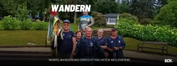
22.06.26
+++ Wimpelwanderung erreicht nächsten Meilenstein +++
Wimpel erreicht 34. Thüringer Wandertag – Gemeinsam auf dem Weg nach Oberwiesenthal
Schritt für Schritt dem großen Ziel entgegen
Unsere Wimpelwandergruppe der Wanderabteilung hat am 20. Juni ein weiteres wichtiges Etappenziel auf dem Weg zum 123. Deutschen Wandertag in Oberwiesenthal erreicht. Hinter unseren Wanderfreunden liegen bereits zahlreiche Kilometer, beeindruckende Landschaften und viele unvergessliche Begegnungen. Die jüngste Etappe führte durch den Thüringer Wald – eine der schönsten Wanderregionen Deutschlands. Dabei standen unter anderem Stationen am Großen Inselsberg sowie beim Deutschen Wandertag in Bad Tabarz auf dem Programm.
Wandern verbindet Menschen
Besonders beeindruckend ist immer wieder zu erleben, wie das Wandern Menschen zusammenführt. Egal ob aus Thüringen, Sachsen, Hessen oder anderen Regionen Deutschlands – auf den Wegen entstehen Gespräche, Freundschaften und gemeinsame Erinnerungen. Genau diese Verbundenheit spiegelt auch das Motto des 123. Deutschen Wandertages wider: „Bewegt verbunden – Gemeinsam durch das Erzgebirge“. Im September 2026 werden in Oberwiesenthal mehrere Tausend Wanderfreunde aus Deutschland und ganz Europa erwartet. Erstmals findet der Deutsche Wandertag dabei gemeinsam mit der internationalen EURORANDO statt, einem der größten Wanderereignisse Europas. Damit wird das Erzgebirge für einige Tage zum Treffpunkt der europäischen Wandergemeinschaft.
Jeder Kilometer erzählt eine Geschichte
Unsere Wimpelwanderung ist weit mehr als nur eine sportliche Herausforderung. Sie steht für Gemeinschaft, Tradition und die Freude an der Bewegung in der Natur. Mit jedem zurückgelegten Kilometer wird der symbolische Wimpel ein Stück näher an sein Ziel gebracht. Auch wenn bereits einige Etappen erfolgreich gemeistert wurden, liegt bis Oberwiesenthal noch ein gutes Stück Weg vor unserer Wandergruppe. Doch wer die Begeisterung und den Zusammenhalt unserer Wanderfreunde erlebt, weiß: Dieses Ziel wird Schritt für Schritt erreicht werden.
Mitwandern ausdrücklich erwünscht
Die Wimpelwanderung lebt von der Gemeinschaft. Deshalb sind alle Wanderfreundinnen und Wanderfreunde herzlich eingeladen, unsere Gruppe auf den kommenden Etappen zu begleiten. Ob für einige Kilometer oder einen ganzen Wandertag – jede Mitwanderin und jeder Mitwanderer ist willkommen. Gemeinsam unterwegs zu sein, die Natur zu genießen und neue Menschen kennenzulernen – genau das macht den besonderen Reiz dieser Reise aus.
Wir wünschen unserer Wanderabteilung weiterhin viele schöne Begegnungen, bestes Wanderwetter und unvergessliche Momente auf dem Weg zum Deutschen Wandertag 2026 in Oberwiesenthal.
Unsere nächsten Etappen
Mittwoch, 24.06.2026
Grenzadler Oberhof – Schmücke/Bahnhof Rennsteig
10 bzw. 17 km
Samstag, 27.06.2026
Masserberg – Siegmundsburg
10 km
Donnerstag, 02.07.2026
Königshof – Dreifreistaatenstein
10 km
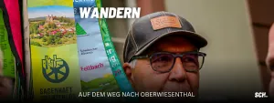
15.06.26
+++ Auf dem Weg nach Oberwiesenthal +++
Wimpelwanderung zum 123. Deutschen Wandertag offiziell gestartet
Mit dem ersten Schritt beginnt ein ganz besonderes Abenteuer: Unsere Wanderabteilung hat sich auf den Weg zum 123. Deutschen Wandertag nach Oberwiesenthal gemacht. Die traditionelle Wimpelwanderung wurde gestartet und führt unsere Wanderfreunde in den kommenden Wochen und Monaten über zahlreiche Kilometer, durch wunderschöne Landschaften und zu vielen Begegnungen mit Wanderbegeisterten aus ganz Deutschland. Der Deutsche Wandertag ist weit mehr als nur eine Veranstaltung. Er steht für Gemeinschaft, Tradition und die Liebe zur Natur. 2024 durfte unsere Wanderabteilung Gastgeber des 122. Deutschen Wandertages sein. Nun wird der symbolträchtige Wimpel an den nächsten Ausrichter übergeben – den Kurort Oberwiesenthal im Erzgebirge. Dort findet vom 24. bis 27. September 2026 der 123. Deutsche Wandertag unter dem Motto „Bewegt verbunden – Gemeinsam durch das Erzgebirge“ statt. Erwartet werden mehrere Tausend Wanderfreunde aus Deutschland und ganz Europa.
Viele Etappen bis zum großen Ziel
Vor unseren Wanderern liegt ein langer Weg. Die Wimpelwanderung führt traditionell in mehreren Etappen von Gastgeber zu Gastgeber und verbindet dabei Regionen, Vereine und Menschen miteinander. Auf ihrem Weg Richtung Erzgebirge werden unsere Wanderfreunde zahlreiche Landschaften durchqueren, neue Wege entdecken und viele gemeinsame Stunden erleben. Jeder Kilometer erzählt dabei seine eigene Geschichte. Mal geht es über sanfte Höhenzüge, mal durch dichte Wälder, entlang historischer Orte oder über aussichtsreiche Wanderpfade. Was bleibt, sind die gemeinsamen Erinnerungen, die Gespräche unterwegs und das Gefühl, Teil einer großen Wanderfamilie zu sein. Gerade diese Etappen machen den besonderen Reiz der Wimpelwanderung aus. Nicht die Geschwindigkeit zählt, sondern das gemeinsame Erlebnis und die Verbundenheit untereinander.
Ein Symbol für Gemeinschaft und Tradition
Der Wimpel ist dabei weit mehr als nur ein Stück Stoff. Er symbolisiert die Weitergabe einer jahrzehntelangen Tradition und verbindet die Gastgeberstädte des Deutschen Wandertages miteinander.
Für unsere Wanderabteilung ist es eine besondere Ehre, Teil dieser Tradition zu sein und den Weg von Heilbad Heiligenstadt bis nach Oberwiesenthal mitzugestalten. Jeder Schritt steht dabei auch für die Werte, die das Wandern ausmachen: Zusammenhalt, Naturverbundenheit und das Erleben von Gemeinschaft.
Ziel: Die Wanderhauptstadt 2026
Am Ende der Reise wartet mit Oberwiesenthal die höchstgelegene Stadt Deutschlands. Rund um den Fichtelberg und den tschechischen Keilberg werden beim Deutschen Wandertag mehr als 35 geführte Wanderungen sowie zahlreiche kulturelle Veranstaltungen angeboten. Höhepunkte sind unter anderem der traditionelle Festumzug und die feierliche Übergabe des Wimpels an den neuen Gastgeber. Besonders unsere Wimpelwandergruppe wird dort offiziell empfangen.
Wir wünschen unserer Wanderabteilung für die bevorstehenden Etappen viele unvergessliche Erlebnisse, bestes Wanderwetter und stets genügend Kraft für die kommenden Kilometer.
Kommt gesund ans Ziel – wir sind stolz auf euch und begleiten euren Weg mit großer Freude!
+++ Wimpelstab wird zum Staffelstab +++
Eine besondere Aufgabe für unsere Wanderabteilung
Wenn am 15. Juni die Wanderstiefel geschnürt werden, beginnt für unsere Wanderabteilung eine ganz besondere Reise. Es ist nicht nur eine Wanderung durch einige der schönsten Landschaften Mitteldeutschlands – es ist eine Reise voller Symbolkraft, Gemeinschaft und Tradition. Als Ausrichter des 122. Deutschen Wandertages wurde uns eine besondere Ehre zuteil: die Übergabe des Wimpelstabes an den nächsten Gastgeber. Dieser Wimpelstab ist weit mehr als nur ein Symbol. Er steht für die Verbundenheit der Wandervereine in Deutschland, für gelebtes Ehrenamt und die Leidenschaft für das Wandern. „Wir freuen uns sehr, diese besondere Aufgabe übernehmen zu dürfen. Es ist für uns eine große Ehre, den Wimpelstab persönlich nach Oberwiesenthal zu bringen und damit die Verbindung zwischen zwei Deutschen Wandertagen sichtbar zu machen“, betont Wanderwart Manfred Weinrich.
Schritt für Schritt durch Mitteldeutschland
Die Strecke nach Oberwiesenthal wird nicht an einem Stück zurückgelegt. Stattdessen führen zahlreiche Tagesetappen die Wandergruppe quer durch Thüringen und Sachsen.
Von Heilbad Heiligenstadt aus geht es zunächst auf dem Naturparkweg Leine-Werra in Richtung Creuzburg. Anschließend folgen die Wanderer dem berühmten Rennsteig mit Stationen am Großen Inselsberg, in Oberhof, Masserberg und schließlich bis nach Mödlareuth. Von dort führt der Kammweg Erzgebirge-Vogtland weiter bis ins Erzgebirge nach Oberwiesenthal. Unterstützt wird die Wandergruppe dabei vom Naturpark Eichsfeld-Hainich-Werratal, dem HVE Eichsfeld Touristik e. V., der Stadt Heilbad Heiligenstadt, dem Werratalverein 1883 e. V. sowie zahlreichen befreundeten Wandervereinen entlang der Strecke. Die Wanderungen werden sowohl im Juni als auch Mitte September fortgesetzt, bevor das große Ziel erreicht wird.
Ankunft beim Deutschen Wandertag
Der emotionale Höhepunkt der Reise wartet schließlich am 24. September 2026. Dann wird der 123. Deutsche Wandertag in Oberwiesenthal feierlich eröffnet.
Wenn die „Wimpelwandergruppe“ aus dem Eichsfeld dort auf der Bühne empfangen wird und den Wimpelstab offiziell übergibt, endet eine außergewöhnliche Reise, die viele Monate zuvor in Heilbad Heiligenstadt begonnen hat. Eine Reise, die zeigt, wie lebendig die Wandertradition in unserer Region ist und wie viel Engagement in ihr steckt.
Mitwandern ausdrücklich erwünscht
Unsere Wanderabteilung freut sich über alle, die einzelne Etappen oder Teilstrecken gemeinsam mit der Gruppe absolvieren möchten. Jeder interessierte Wanderfreund und jede interessierte Wanderfreundin ist herzlich willkommen. Für eine bessere Planung wird um eine vorherige Anmeldung unter info@sc1911-heiligenstadt.de gebeten.
———————————————–
+++ Wanderabteilung blickt großen Ereignissen entgegen +++
Unsere Wanderabteilung bereitet sich aktuell auf zwei besondere Höhepunkte im Jahr 2026 vor. Seit der Gründung im Juli 2021 hat sich die Abteilung zu einem festen Bestandteil unseres Vereins entwickelt. Mit derzeit 44 aktiven Mitgliedern und einem engagierten Organisationsteam wird das Wandern beim SCH aktiv gelebt – ganz nach dem Motto: Nur wo man zu Fuß war, ist man wirklich gewesen.
Vorbereitung auf den 123. Deutschen Wandertag
Ein besonderes Ereignis wartet im September 2026 auf unsere Wanderfreunde. Nach dem erfolgreichen 122. Deutschen Wandertag 2024 in Heiligenstadt werden wir den Wandertagswimpel – das Symbol des Deutschen Wandertages – traditionell zu Fuß nach Oberwiesenthal bringen. Dort findet vom 24. bis 27. September 2026 der 123. Deutsche Wandertag statt. Die Übergabe des Wimpels am Drei-Freistaaten-Stein bildet dabei einen besonderen Moment, und die Planungen laufen mittlerweile auf Hochtouren. So fand am Montag im Rathaus eine Infoveranstaltung statt, zu der u. a. unsere Wanderabteilung eingeladen hatte, um über die aktuellen Planungen zu informieren.
Die Strecke wird in mehreren Etappen organisiert, sodass unsere Wanderer gemeinsam unterwegs sind und niemand allein gehen muss. Die Vorfreude auf dieses besondere Erlebnis ist bereits jetzt groß.
Thüringer Wandertag als wichtiger Zwischenschritt
Bereits im Juni steht mit dem Thüringer Wandertag in Bad Tabarz ein weiterer Höhepunkt auf dem Programm. Die gemeinsame Wanderung dorthin dient gleichzeitig als wichtige Vorbereitung auf den Deutschen Wandertag in Oberwiesenthal. Mit viel Engagement planen unsere Ehrenamtlichen die einzelnen Etappen und sorgen dafür, dass auch künftig viele Wanderfreunde beim SCH gemeinsam unterwegs sein können.
———————————————–
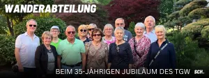
+++ Wanderabteilung beim 35-jährigen Jubiläum des TGW +++
Ein besonderer Moment für unsere Wanderabteilung
Im Rahmen der Feierlichkeiten zum 35-jährigen Jubiläum des Thüringer Gebirgs- und Wandervereins e.V. (TGW) durfte unsere Wanderabteilung einen ganz besonderen Moment erleben. Mit herzlichen Worten würdigten TGW-Präsident Knut Korschewsky und TWV-Präsidentin Christine Lieberknecht das Engagement und den Mut unserer Abteilung, im Jahr 2024 als Ausrichter des 122. Deutschen Wandertages in Heilbad Heiligenstadt aufzutreten.
Lob, das unter die Haut geht
„Wir sind stolz darauf, dass auch dieser Wandertag von einem Verein aus der TGW-Familie getragen wurde“, sagte Knut Korschewsky und hob damit den außergewöhnlichen Einsatz unseres jungen Vereins hervor. Christine Lieberknecht betonte in ihrer Rede: „Ich staune immer wieder, wie diese noch junge Abteilung die enormen Aufgaben so souverän gemeistert hat.“
Ein Satz, der berührt – denn die Abteilung Wandern des 1. SC 1911 Heiligenstadt e.V. wurde erst 2021 gegründet. Dass sie nur wenige Jahre später das größte Wanderereignis Deutschlands ausrichtete, ist ein starkes Zeichen für Pioniergeist, Teamarbeit und ehrenamtliches Engagement.
Ein Wandertag mit nachhaltiger Wirkung
Der 122. Deutsche Wandertag 2024 in Heilbad Heiligenstadt war mehr als ein Event – er war ein Ausdruck von Heimatverbundenheit, Gastfreundschaft und dem, was gemeinschaftliches Engagement bewegen kann. Er hat nicht nur das Image Thüringens als Wanderland gestärkt, sondern auch weit über die Grenzen der Region hinaus positive Spuren hinterlassen.
Diese Anerkennung erfüllt uns mit Stolz – und mit Dankbarkeit gegenüber all jenen, die diesen Weg mit uns gegangen sind.
Mit Blick nach vorn – die Wimpelstafette ruft
Ein schöner Gedanke, der zum Abschluss mit auf den Weg gegeben wurde: Als Ausrichter des letzten Deutschen Wandertags sind wir eingeladen, den Staffelstab – die Wimpelstange – weiterzutragen. Symbolisch und sportlich zugleich werden wir diesen Weg antreten und ihn bis zum nächsten Austragungsort in Oberwiesenthal in mehreren Etappen erwandern.
Eine Reise, die verbindet – und die zeigt, was gemeinsam möglich ist.
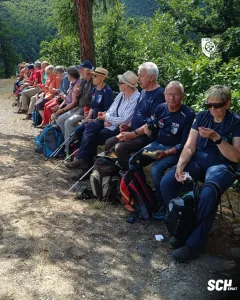
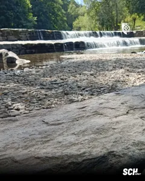
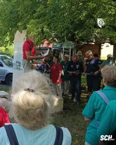
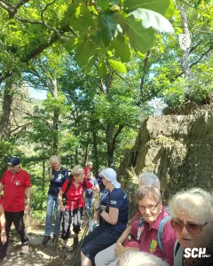
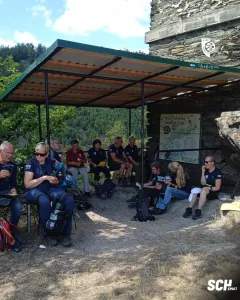
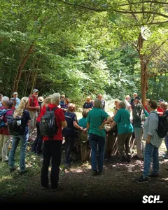
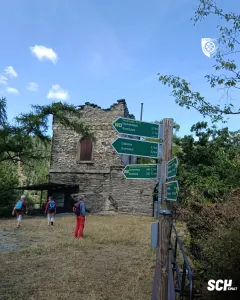
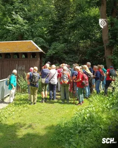
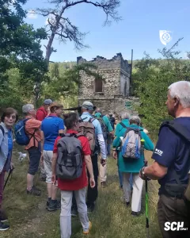
———————————————–
+++ Ein bewegtes Wanderjahr 2025 +++
Gemeinsam unterwegs – voller Höhepunkte und Begegnungen
Das Wanderjahr 2025 verspricht für unsere Abteilung Wandern nicht nur Naturgenuss und sportliche Aktivität – es wird auch ein Jahr voller besonderer Momente, Begegnungen und gelebter Gemeinschaft. Parallel zu unserem regulären Wanderplan stehen zahlreiche Höhepunkte auf dem Programm, die die Herzen aller Wanderfreunde höherschlagen lassen.
Der Auftakt zu einem ereignisreichen Jahr beginnt am 26. April 2025, wenn eine Gruppe unserer Abteilung an den Feierlichkeiten zu „200 Jahre Iberganlagen“ teilnimmt. Es ist eine besondere Ehre, Teil dieses geschichtsträchtigen Jubiläums zu sein – und ein schöner Anlass, die Verbindung zwischen Natur, Kultur und Gemeinschaft zu feiern.
Schon wenige Wochen später, am 14. Mai 2025, dem Tag des Wanderns in Deutschland, machen wir uns gemeinsam mit dem Werratalverein auf den Weg. Vom Gutshof Vogt in Großtöpfer wandern wir entlang des alten Bahndamms von Thüringen nach Hessen – eine symbolische Route, die nicht nur landschaftlich reizvoll ist, sondern auch Grenzen überwindet und Menschen zusammenbringt.
Ein echtes Highlight erwartet uns vom 16. bis 18. Mai, wenn eine Gruppe unserer Abteilung zur Schwäbischen Alb aufbricht. Diese Einladung des größten Wandervereins Deutschlands entstand aus einer schönen Begegnung beim Deutschen Wandertag 2024 – und nun führt sie uns zu gemeinsamen Wanderungen zur Burg Teck. Hier wird deutlich: Wandern verbindet – über Regionen hinweg, in Freundschaft und gegenseitiger Wertschätzung.
Am 14. Juni 2025 steht ein besonderes Erlebnis auf dem Plan: die Lange Nacht der Natur. Gemeinsam mit dem Werratalverein wandern wir von Asbach zum Altenstein – ein magischer Abend, an dem wir die Natur in der Dämmerung und bei Nacht ganz neu erleben dürfen. Ein Moment der Stille, des Staunens und des Miteinanders.
Weiter geht es am 5. Juli mit dem Wipfeltreffen am Schneekopf, einem beliebten Treffpunkt für alle, die gern die Höhen erklimmen und Weitblicke genießen. Und am 19. Juli 2025 folgt ein weiterer Höhepunkt: Unser Verein ist eingeladen zur Festveranstaltung in Bad Blankenburg anlässlich des 35-jährigen Jubiläums des Thüringer Gebirgs- und Wandervereins. Gemeinsam mit vielen anderen Thüringer Wandervereinen erkunden wir das wunderschöne Schwarzatal, bevor wir uns in geselliger Runde austauschen – unter anderem mit der Präsidentin des Thüringer Wanderverbands, Frau Lieberknecht.
Doch damit ist das Wanderjahr noch lange nicht vorbei. Unsere Abteilung wird sich auch 2025 wieder an allen Wandertagen im Eichsfeld beteiligen – ein fester Bestandteil unseres Vereinslebens und Ausdruck unserer tiefen Verbundenheit mit der Region.
Den Spätsommer genießen wir bei der Eichsfelder Wanderwoche vom 19. bis 21. September in Diedorf, bevor das Jahr mit einem besonderen Zeichen der Verbindung ausklingt: dem Bayerisch-Thüringischen Wandertag vom 3. bis 5. Oktober in Mödlareuth – einem Ort, der einst trennte und heute verbindet.
Jede dieser Veranstaltungen ist mehr als nur ein Punkt im Kalender – sie ist ein Kapitel in einem gemeinsamen Weg, den wir miteinander gehen. Ein Weg, der Natur und Mensch verbindet, Freundschaften stärkt und Erinnerungen schafft. Wir freuen uns auf ein Wanderjahr voller gemeinsamer Schritte, offener Gespräche, weiter Ausblicke – und auf viele unvergessliche Momente mit euch allen.
———————————————–
122. Deutscher Wandertag 19. bis 22. September 2024
Wir freuen uns auf Ihren Besuch in Heilbad Heiligenstadt.
Mehr Informationen auf www.dwt2024.de
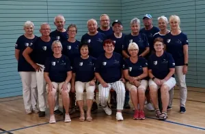
+++ Ein Dankeschön an alle Wanderer +++
Als erster Sportverein überhaupt hat der 1. SC 1911 Heiligenstadt die Ehre übernommen, den Deutschen Wandertag auszurichten. Dies zeigt, wie innovativ und zukunftsweisend die Wanderabteilung des Vereins agiert.
Ein besonderer Höhepunkt war der Empfang der Wimpelgruppe des Schwäbischen Albvereins e.V. aus Fellbach im Remstal. An unserem geographischen Mittelpunkt Deutschlands wurden die Wanderfreunde herzlich von der Wanderabteilung des Vereins empfangen. Gemeinsam begleitete man die Gäste nach Heiligenstadt, und dieser symbolische Schulterschluss zwischen Tradition und Zukunft bleibt vielen in Erinnerung.
Die Abteilung Wandern glänzte im Laufe des 122. Deutschen Wandertages nicht nur mit einer großen Teilnehmerzahl bei den verschiedenen Wandertouren, sondern auch durch eine aktive Mitgestaltung der Versorgung. Vom 19. bis 22. September 2024 wurde im Heinrich-Heine-Park ein breites Angebot bereitgestellt – dank der tatkräftigen Unterstützung verschiedener Abteilungen des Vereins. Zum Abschluss dieses Großereignisses präsentierten sich die Wanderer des 1. SC 1911 Heiligenstadt stolz und geschlossen am Ende des Festumzuges und zeigten damit, dass Gemeinschaft und Engagement in diesem Verein gelebte Werte sind.
Was die Wanderabteilung besonders auszeichnet, ist nicht nur ihre sportliche Aktivität, sondern auch der soziale Zusammenhalt, den sie in den Vordergrund stellt. Gemeinsame Unternehmungen, die über das Wandern hinausgehen, stärken das Gemeinschaftsgefühl und machen den Verein zu einem wichtigen sozialen Anker.
Der 1. SC 1911 Heiligenstadt möchte an dieser Stelle ein herzliches Dankeschön aussprechen. Danke an alle Wanderer, die mit ihrem Einsatz, ihrer Freude und ihrer Gemeinschaft diesen Weg möglich gemacht haben. Diese großartige Entwicklung zeigt, wie stark ein Verein sein kann, wenn Engagement und Leidenschaft aufeinandertreffen.
Vielen Dank an die Stadt Heilbad Heiligenstadt, dem HVE Eichsfeld, dem Deutschen Wanderverband und dem Naturpark Eichsfeld-Hainich-Werratal für all das, was gemeinsam erreicht wurde – und auf viele weitere unvergessliche Wanderungen!
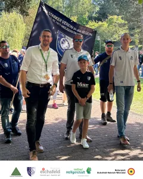
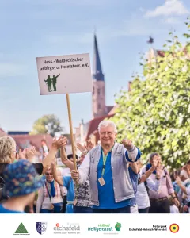
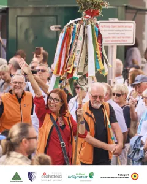
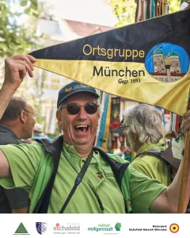
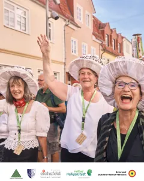
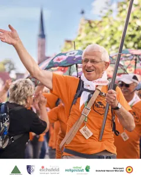
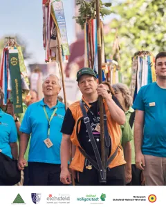
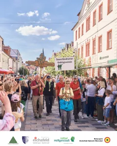
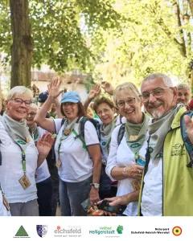
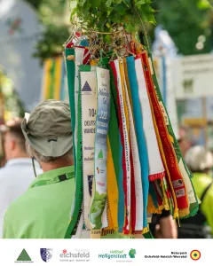
———————————————–
+++ 32. Thüringer Wandertag in Kammerforst +++
Am Samstag machte sich die Wanderabteilung unseres Vereins auf den Weg zum 32. Thüringer Wandertag in Kammerforst. Unter dem Motto „Wandern am Hainich, wo Tradition verbindet“ wurde die Veranstaltung von der Ortsgruppe Hainich-Rennstieg des Rennsteigvereins 1896 e.V. ausgerichtet. Das idyllische Kammerforst bot die perfekte Kulisse für einen Tag voller Naturerlebnisse, Tradition und Gemeinschaft.
Von unserer Wanderabteilung nahmen etwa 20 begeisterte Wanderfreunde teil, die sich darauf freuten, die Schönheit und Vielfalt der Hainich-Region zu erkunden. Insgesamt wurden 13 verschiedene Wanderungen angeboten, die unterschiedliche Schwierigkeitsgrade und Themen abdeckten, sodass für jeden Geschmack etwas dabei war.
Unsere Wanderfreunde entschieden sich für die Wanderung **Rennstieg zur Betteleiche**. Diese mittelschwere Wanderung erstreckte sich über 11,8 Kilometer und führte vorbei an historischen Punkten sowie atemberaubenden Aussichtspunkten. Die Route war gut gewählt, denn sie bot eine ideale Mischung aus körperlicher Herausforderung und landschaftlichen Highlights. Besonders beeindruckend war der historische Rennstieg, ein traditioneller Wanderweg, der tief in der Kultur der Region verwurzelt ist. Der Höhepunkt der Wanderung war die Betteleiche, ein markanter Baum mit einer langen Geschichte, der als Symbol für die Verbindung von Natur und Tradition gilt.
Neben den abwechslungsreichen Wanderungen wurde auch ein umfangreiches Rahmenprogramm geboten. Kulturelle und musikalische Darbietungen sorgten für Unterhaltung und trugen zur festlichen Atmosphäre bei. Unser Wandertagsbüro war ebenfalls präsent und informierte mit Tokessa Reiß und Moritz Lange über den bevorstehenden 122. Deutschen Wandertag. Viele Besucher nutzten die Gelegenheit, sich aus erster Hand über dieses große Ereignis zu informieren und in den Austausch zu treten.
———————————————–
Wanderausflug unserer Abteilung zum Tag des Wanderns 2024
Gestern führte unsere Wanderabteilung einen besonderen Wanderausflug zum „Tag des Wanderns“ durch. Bei herrlichem Wetter und angenehmen Temperaturen versammelten sich fast 30 Wanderfreunde am Wanderparkplatz in der Dingelstädter Straße. Bereits hier fand ein reger Austausch unter den Teilnehmern statt, was die freudige Atmosphäre des Tages widerspiegelte.
Eine befreundete Wandergruppe aus Hüpstedt schloss sich unserer Wanderung an, was zu einer noch lebhafteren und abwechslungsreicheren Wanderung beitrug. Gemeinsam starteten wir unsere Tour und machten uns auf den Weg durch das malerische Dachstal. Die Schönheit der Natur und die frische Luft sorgten für eine heitere Stimmung unter den Wanderern.
Der erste Halt unserer Route war die Dachstalhütte, wo wir eine kurze Rast einlegten, um die Landschaft zu genießen und uns zu stärken. Von dort aus führte uns der Weg weiter zum Dünkreuz, ein beeindruckender Aussichtspunkt und idealer Ort für eine wohlverdiente Pause. Hier wurde eine deftige Vesper mit Eichsfelder Stracke und Fettbrot serviert, die allen Teilnehmern neue Energie verlieh.
Während der Pause am Dünkreuz wurde auch intensiv über den Deutschen Wandertag diskutiert. Die Teilnehmer tauschten Ideen aus, wie man den Ausrichter bei dieser Großveranstaltung unterstützen könnte. Die Gespräche waren produktiv und zeigten das Engagement und die Leidenschaft unserer Wanderer für das gemeinsame Hobby und die Förderung des Wanderns.
Die gelungene Veranstaltung endete mit einem Dank an Helmut Heiland, der als Wanderführer einen großartigen Job gemacht hatte. Sein Wissen und seine Führung machten die Wanderung zu einem besonderen Erlebnis. Ein großer Dank gilt auch den 30 Teilnehmern, die durch ihre Anwesenheit und gute Laune diesen Tag unvergesslich gemacht haben.
Wir freuen uns bereits auf das nächste Highlight für unsere Wanderabteilung: den Thüringer Wandertag am 22. Juni in Kammerforst. Wir hoffen, viele von euch dort wiederzusehen und gemeinsam weitere wunderschöne Wanderungen zu erleben.
———————————————–
31. Thüringer Wandertag in Ilfeld
Der 31. Thüringer Wandertag in Ilfeld war nicht nur ein besonderes Erlebnis für die Teilnehmer des Organisationsteams des Deutschen Wandertages 2024, sondern auch für die Mitglieder der Abteilung Wandern des SC 1911 Heiligenstadt um Manfred Weinrich und Vereinspräsident Thadäus König als offizieller Ausrichter. Dabei bot sich die perfekte Gelegenheit für einen regen Austausch mit den Wanderern des Thüringer Wanderverbandes. In der idyllischen Umgebung des Südharzes konnten die Teilnehmer die Schönheit der Natur genießen und gleichzeitig ihre Leidenschaft für das Wandern teilen.
So fand bei der Wanderung „Dampfloktour“ ein reger Austausch zwischen Wanderern des SC Heiligenstadt, des Thüringer Wanderverbandes statt. Der Austausch war geprägt von Offenheit und Begeisterung für das Wandern, und es wurden viele wertvolle Erfahrungen geteilt. Dabei wurde besonders deutlich, wie sehr die Wanderleidenschaft Menschen unterschiedlicher Hintergründe und Vereine verbinden kann.
Eine besonderere Teilnehmerin des Thüringer Wandertages war die Vorsitzende des Thüringer Wanderverbandes Frau Christine Lieberknecht, die sich sehr zuversichtlich über den bevorstehenden 122. Deutschen Wandertag im Eichsfeld äußerte. Sie betonte die Bedeutung einer starken Gemeinschaft und einer engen Zusammenarbeit zwischen den Wandervereinen des Eichsfeldes. Frau Lieberknecht erklärte, dass der Erfolg des kommenden Deutschen Wandertages maßgeblich von der Integration und Beteiligung der Wandervereine und -gruppen aus der Region abhängt. Diese Einschätzung teilen die SCH-Wanderabteilung und das Organisationsteam des deutschen Wandertages, weshalb es bereits mehrere Vernetzungstreffen gab.
Mit großer Vorfreude blicken nun alle auf den 122. Deutschen Wandertag in Heilbad Heiligenstadt und der Region Eichsfeld im nächsten Jahr. Dieses bedeutende Wanderevent bietet die einmalige Gelegenheit, die Schönheit des Eichsfelds deutschlandweit zu präsentieren, neue Freundschaften zu schließen und die Wanderleidenschaft in vollen Zügen zu genießen.
Insgesamt war der Thüringer Wandertag in Ilfeld nicht nur eine gelungene Wanderveranstaltung, sondern auch ein inspirierendes Treffen von Gleichgesinnten, die gemeinsam die Vorfreude auf den kommenden Deutschen Wandertag im Eichsfeld teilen. Wanderfreunde aus dem gesamten Land können sich bereits jetzt auf ein unvergessliches Erlebnis freuen, bei dem die Freude am Wandern und die Verbundenheit mit der Natur im Mittelpunkt stehen werden.
Weitere Informationen:
In der Geschäftsstelle des 1.SC 1911 Heiligenstadt e.V
Leineberg 2
37308 Heilbad Heiligenstadt
Telefon: 03606/612206
zu den üblichen Geschäftszeiten:
jeweils am Dienstag oder Donnerstag
von 17.00 Uhr bis 19.00 Uhr
Ansprechpartner:
Sportfreund Uwe Meinold bzw. der Sportfreund Manfred Weinrich.
Der Verein freut sich über Ihr Interesse!
Quelle: www.sc1911-heiligenstadt.de · Stand 06.10.2026